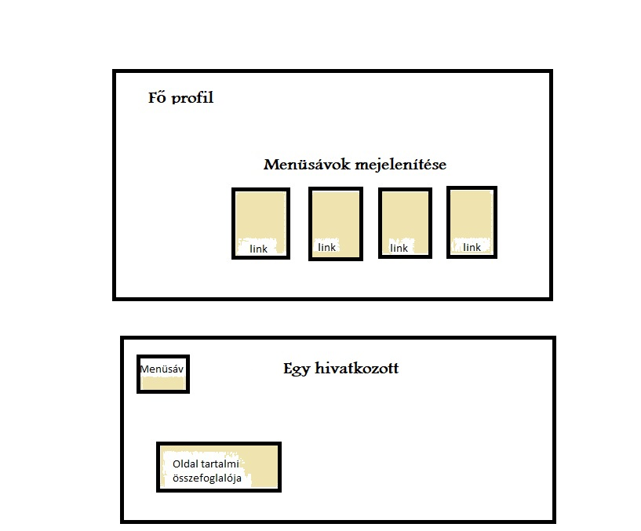

Oldalnavigáció:
Fő oldal
Bemutatkozás
Képeim
Elérhetőség
Tartalmi összefoglaló
A tervezés menete:
Ez a projekt a Gépészeti informatika kurzus házi feladataként jött létre.
1) Először a háttér megtervezése és kivitelezése valósult meg.
2) Ezt követte a kártyák létrehozása és pozícionálása.
3) Majd a Fő oldalhoz tartozó menü oldalak megtervezése és kivitelezése.
